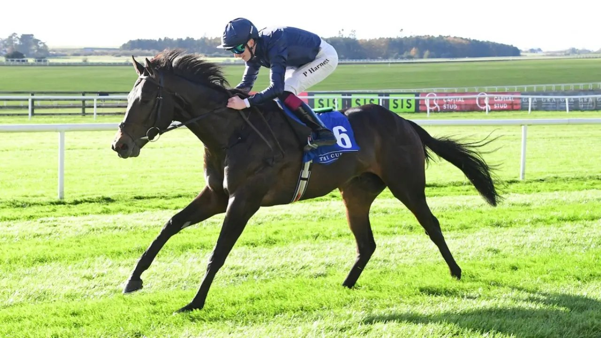

Choctaw Nation gana el Maiden del Curragh y Paddy Harnett cierra su año de aprendiz
El pupilo de Aidan O'Brien se impuso por tres cuerpos y cuarto en el Irish European Breeders Fund Maiden, la carrera con la que Paddy Harnett celebró su título de aprendiz.

Paddy Harnett ya sabía que cerraba la temporada como mejor aprendiz de Irlanda en la llanura. El Curragh le dio la reunión final, y el jockey la remató con una victoria en la primera carrera del día a lomos de Choctaw Nation.
El caballo de Aidan O'Brien partía como favorito a 4/9 tras un segundo puesto prometedor en su debut. Cumplió: ganó por tres cuerpos y cuarto a Favour Royal, que había salido a 20/1.
Harnett no escatimó elogios: «Este caballo me ha dado una sensación que ningún otro me había dado nunca. Creo que es un caballo de verdad». El jockey destacó también su actitud. Bajó hasta la salida por delante y el potro iba con las orejas arriba, dispuesto a hacer lo que le pidieran.
La carrera tuvo un campo numeroso, y Choctaw Nation estuvo un buen rato esperando dentro del cajón. Salió limpio y le dio igual ir en cabeza y solo. «Es muy directo», resumió su jockey.
El momento decisivo llegó en el poste de los dos furlongs. «Le di un toque y lo que hizo fue alargar la zancada más que otra cosa», explicó Harnett. «Llegó muy bien a la meta y costó mucho pararlo, así que le seguiré la pista el año que viene».
Las casas de apuestas Paddy Power, Sky Bet y Betfair también tomaron nota: rebajaron a Choctaw Nation a 25/1 para el próximo Derby, cuando antes estaba en torno a 40/1.
Por Martín Larrañeta